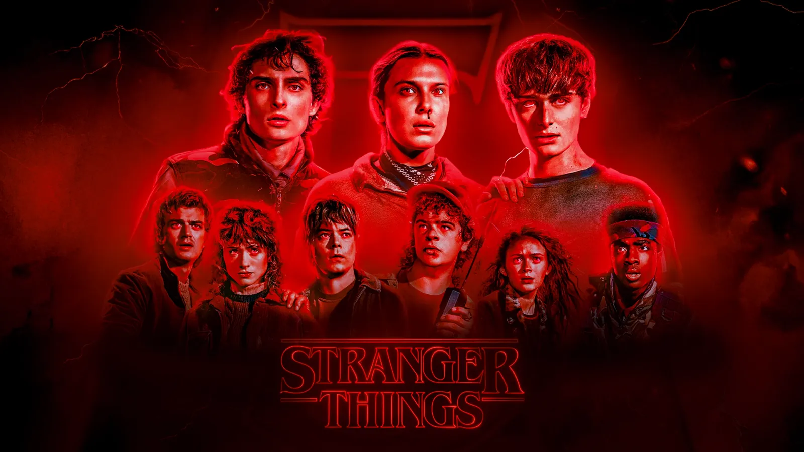
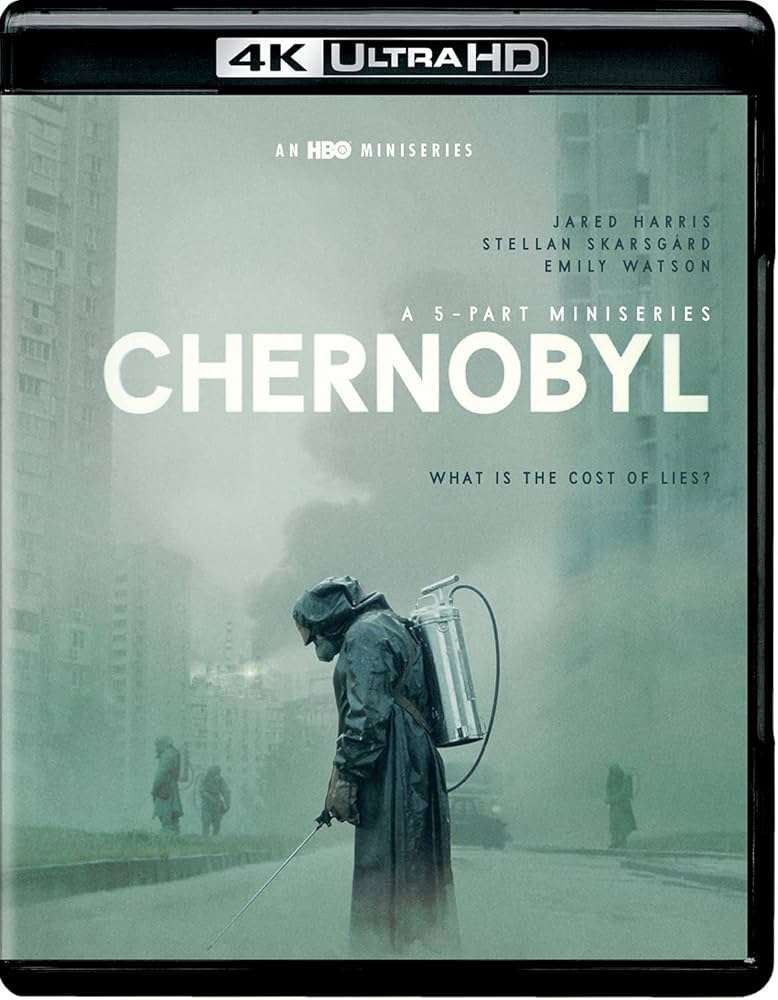
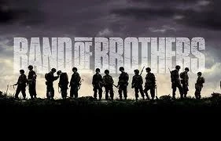

Dizi Önerileri
 1. Breaking Bad:
1. Breaking Bad:Sıradan bir kimya öğretmeni olan Walter White’ın, kanser olduğunu öğrendikten sonra ailesinin geleceği için uyuşturucu üretimine girmesini anlatır.
"İyi bir adamın" hırs ve güç tutkusuyla nasıl acımasız bir suç imparatoruna (Heisenberg) dönüştüğünü adım adım işler.
Senaryo matematiği, sembolizmleri ve karakter gelişimleri açısından dizi tarihinin en kusursuz yapımlarından biridir.
Walter ve eski öğrencisi Jesse Pinkman arasındaki inişli çıkışlı ilişki, hikayenin duygusal motorunu oluşturur.
Her sezonuyla çıtayı biraz daha yükselten dizi, ahlaki çöküşü ve sonuçlarını ders niteliğinde bir kurguyla sunar.
 2. Game of Thrones:
2. Game of Thrones: Westeros adlı hayali bir kıtada, hanedanların "Demir Taht"ı ele geçirmek için verdikleri acımasız mücadeleyi konu alır.
Ejderhalar ve buzdan yaratıklar gibi fantastik unsurlar barındırsa da, temelinde güç, ihanet ve siyaset yatar.
Geniş karakter kadrosu ve kimsenin güvende olmadığı sürprizli senaryosuyla televizyonda bir fenomen haline gelmiştir.
Görkemli savaş sahneleri ve karmaşık aile ilişkileriyle izleyiciye epik bir görsel şölen sunar.
İyilik ve kötülük arasındaki çizginin grileştiği, her kararın ağır bedellerinin olduğu devasa bir dünyadır.

3. Stranger Things: 1980’lerin Indiana eyaletinde, küçük bir çocuğun gizemli bir şekilde kaybolmasıyla başlayan olaylar zincirini anlatır.
Dizi, doğaüstü güçler, gizli hükümet deneyleri ve "Baş Aşağı" (Upside Down) adlı karanlık bir paralel evren etrafında döner.
Bir grup sadık arkadaşın, onlara katılan özel yetenekli bir kızla birlikte kasabayı kurtarma çabası izleyiciyi içine çeker.
80’lerin popüler kültürüne, müziklerine ve sinemasına duyulan yoğun nostaljiyi harika bir görsel dille sunar.
Hem çocukların büyüme hikayesini hem de tüyler ürperten bir bilimkurgu gizemini başarıyla harmanlar.

4. Chernobyl: 1986 yılında Sovyetler Birliği'nde gerçekleşen nükleer felaketin öncesini ve sonrasını anlatan sarsıcı bir dramdır.
Dizi, patlamanın nedenlerinden ziyade, olayı örtbas etmeye çalışan bürokrasiyi ve fedakarca hayatını feda eden insanları merkezine alır.
Görsel atmosferi ve gerilim dolu müzikleriyle izleyicide derin bir klostrofobi ve çaresizlik hissi uyandırır.
Yalanların bedelini kimlerin ödediğini sorgularken, bilimin siyasetle çatışmasını çarpıcı bir dille anlatır.
Kısa sürede büyük ses getiren bu yapım, tarihsel doğruluğu ve oyunculuk performanslarıyla modern bir başyapıttır.

5. Band of Brothers: İkinci Dünya Savaşı sırasında Amerikan ordusundaki "Easy Company" birliğinin gerçek hikayesine odaklanan efsanevi bir minidizidir.
Paraşütçü askerlerin eğitim kamplarından başlayıp Avrupa’nın kurtuluşuna kadar uzanan zorlu yolculuklarını konu alır.
Savaşın sadece stratejik yanını değil, askerler arasındaki kopmaz dostluk bağını ve psikolojik yıkımı da ustalıkla işler.
Steven Spielberg ve Tom Hanks imzalı yapım, prodüksiyon kalitesiyle izleyiciyi adeta cephenin tam ortasına bırakır.
Tarihi gerçekçiliği ve duygusal derinliğiyle savaş türünün gelmiş geçmiş en iyi örneklerinden biri olarak kabul edilir.
Ana Sayfaya Dön